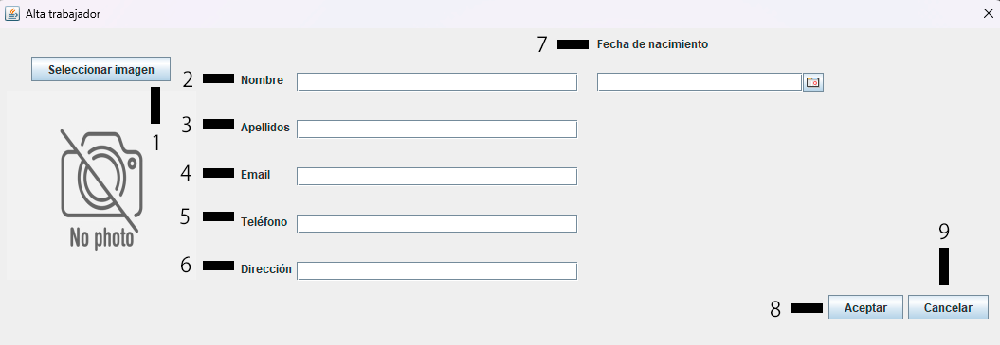

Añadir trabajador
En la ventana de añadir trabajador encontrarás diferentes campos de texto como los de la siguiente imagen:

1.- Su función es la de abrirte el administrador de archivos para que elijas la foto del trabajador.
2.- El nombre del trabajador o nombres en caso de tener más de 1.
3.- Los apellidos o apellido del trabajador.
4.- El email del trabajador (no es obligatorio).
5.- El número de teléfono del trabajdor.
6.- La dirección del trabajador.
7.- Fecha de nacimineto del trabajador.
8.- Botón aceptar, comprobará que todos los campos han sido añadidos y dará de alta el trabajador.
9.- Botón para cancelar el alta, borrará todo el formulario cerrándolo.